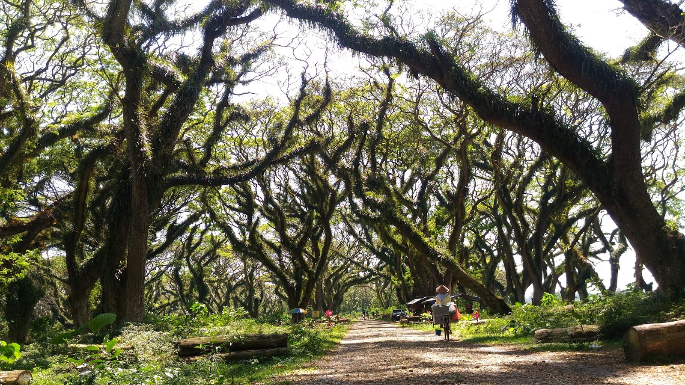

Berita Wisata
|
Wisata Pulau merah akan mengalami pembangunan pada area tugu masuk wisata
Dikarenakan sudah lapungknya tugu masuk di pulau merah |
|
 |
Wisata pantai wedi ireng wisata alam menarik di banyuwangi
Dikarenakan pemandangan yang sangat eksotis |
 |
Wisata kawah ijen sudah dibuka kembali setelah 2 bulan tutup
Dikarenakan pandemi wisata kawah ijen ditutup 2 bulan |
|  |
Wisata djawatan mulai buka lagi atau aktif kembali lagi
Dikarenakan pandemi wisata ini tutup berbulan-bulan |